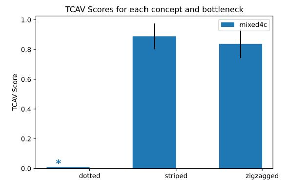

Bölüm 29 Kavramların Tespiti
Özgün eser: Christoph Molnar, Interpretable Machine Learning, detecting-concepts.
Türkçe çeviriyi sunanlar: Yalçın Kavaklı (20269256026) ve Murat Şahin (20169258034).
Çeviri bilgisi: Eğitim amacıyla hazırlanmıştır. Kaynak metin Türkçeye çevrilmiş, bölüm içeriği özetlenmemiştir. Kaynak sürümü: 8f470c85e5ed4ebd69de74425cb9832f1bdc25eb. Lisans: CC BY-NC-SA 4.0. Bu çeviri de aynı lisansla paylaşılır. Kaynaktaki görüşler ve öngörüler özgün yazara aittir.
Kavramların Tespiti
Yazar: Fangzhou Li @ Kaliforniya Üniversitesi, Davis
Şimdiye kadar, kara kutu modelleri özellik atfı (feature attribution) yoluyla açıklamak için pek çok yöntemle karşılaştık. Bununla birlikte, özellik tabanlı yaklaşıma ilişkin bazı kısıtlılıklar vardır. İlk olarak, özellikler yorumlanabilirlik açısından her zaman kullanıcı dostu değildir. Örneğin, bir görüntüdeki tek bir pikselin önemi genellikle anlamlı bir yorum sağlamaz. İkinci olarak, özellik tabanlı bir açıklamanın ifade gücü, özellik sayısıyla sınırlıdır.
Kavram tabanlı yaklaşım, yukarıda belirtilen her iki kısıtlılığı da ele alır. Bir kavram (concept); bir renk, bir nesne, hatta bir fikir gibi herhangi bir soyutlama olabilir. Kullanıcı tanımlı herhangi bir kavram verildiğinde, bir sinir ağı söz konusu kavramla açıkça eğitilmemiş olsa bile, kavram tabanlı yaklaşım ağın öğrendiği gizli uzay (latent space) içine gömülü olan bu kavramı tespit eder. Başka bir deyişle, kavram tabanlı yaklaşım bir sinir ağının özellik uzayıyla sınırlı olmayan açıklamalar üretebilir.
Bu bölümde, ağırlıklı olarak Kim vd. (2018) tarafından sunulan Kavram Aktivasyon Vektörleriyle Test Etme (Testing with Concept Activation Vectors — TCAV) makalesine odaklanacağız.
TCAV: Kavram Aktivasyon Vektörleriyle Test Etme
TCAV, sinir ağları için genel (global) açıklamalar üretmek üzere önerilmiştir; ancak teoride, yönlü türev (directional derivative) almanın mümkün olduğu her modelde çalışmalıdır. Herhangi bir kavram için TCAV, o kavramın modelin belirli bir sınıfa ilişkin tahmini üzerindeki etki düzeyini ölçer. Örneğin TCAV, “çizgili” (striped) kavramının bir görüntüyü “zebra” olarak sınıflandıran modeli nasıl etkilediği gibi sorulara yanıt verebilir. TCAV tek bir tahmini açıklamak yerine bir kavram ile bir sınıf arasındaki ilişkiyi betimlediğinden, modelin genel davranışına ilişkin yararlı bir genel yorum sunar.
TCAV kullanırken incelediğiniz kavramın belirgin ve iyi tanımlanmış olduğundan emin olun. Bu, söz konusu kavramın model tahminleri üzerindeki etkisini doğru biçimde ölçmeye yardımcı olacaktır.
Kavram Aktivasyon Vektörü (CAV)
Bir CAV, bir sinir ağı katmanının aktivasyon uzayında bir kavramı genelleştiren sayısal temsilden ibarettir. \(\mathbf{v}_l^C\) ile gösterilen bir CAV, bir \(C\) kavramına ve modelin darboğazı (bottleneck) olarak da adlandırılan bir \(l\) sinir ağı katmanına bağlıdır. Bir \(C\) kavramının CAV’sini hesaplamak için önce iki veri kümesi hazırlamamız gerekir: \(C\)’yi temsil eden bir kavram veri kümesi ve gelişigüzel verilerden oluşan bir rastgele veri kümesi. Örneğin, “çizgili” kavramını tanımlamak için kavram veri kümesi olarak çizgili nesnelerin görüntülerini toplayabiliriz; rastgele veri kümesi ise çizgi içermeyen rastgele görüntülerden oluşan bir gruptur. Ardından, bir \(l\) gizli katmanını hedefleriz ve kavram kümesinin ürettiği aktivasyonları rastgele kümenin ürettiği aktivasyonlardan ayıran bir ikili sınıflandırıcı (binary classifier) eğitiriz. Bu eğitilmiş ikili sınıflandırıcının katsayı vektörü, \(\mathbf{v}_l^C\) CAV’sidir. Uygulamada ikili sınıflandırıcı olarak bir destek vektör makinesi (SVM) veya lojistik regresyon modeli kullanabiliriz. Son olarak, bir \(\mathbf{x}\) görüntü girdisi verildiğinde, tahminin birim CAV yönündeki yönlü türevini hesaplayarak bu girdinin “kavramsal duyarlılığını” (conceptual sensitivity) ölçebiliriz:
\[S_{C,k,l}(\mathbf{x})=\nabla h_{l,k}(\hat{f}_l(\mathbf{x}))\cdot \mathbf{v}_l^C\]
Burada \(\hat{f}_l\), \(\mathbf{x}\) girdisini \(l\) katmanının aktivasyon vektörüne eşler; \(h_{l,k}\) ise aktivasyon vektörünü \(k\) sınıfının logit çıktısına eşler.
Matematiksel olarak \(S_{C,k,l}(\mathbf{x})\)’in işareti, yalnızca \(h_{l,k}(\hat{f}_l(\mathbf{x}))\) gradyanı ile \(\mathbf{v}_l^C\) arasındaki açıya bağlıdır. Açı 90 dereceden küçükse \(S_{C,k,l}(\mathbf{x})\) pozitif, 90 dereceden büyükse negatif olur. \(\nabla h_{l,k}\) gradyanı çıktıyı en hızlı biçimde en büyükleyen yönü gösterdiğinden, \(S_{C,k,l}\) kavramsal duyarlılığı sezgisel olarak \(\mathbf{v}_l^C\)’nin \(h_{l,k}\)’yi en büyükleyen yöne benzer bir yönü gösterip göstermediğini belirtir. Dolayısıyla \(S_{C,k,l}(\mathbf{x})>0\) olması, \(C\) kavramının modeli \(\mathbf{x}\) girdisini \(k\) sınıfına sınıflandırmaya teşvik ettiği biçiminde yorumlanabilir.
CAV’lerle Test Etme (TCAV)
Önceki paragrafta tek bir veri noktasının kavramsal duyarlılığının nasıl hesaplanacağını öğrendik. Ancak amacımız, bir sınıfın tamamının genel kavramsal duyarlılığını gösteren genel bir açıklama üretmektir. TCAV tarafından kullanılan oldukça doğrudan bir yaklaşım, bir sınıf için pozitif kavramsal duyarlılığa sahip girdilerin sayısının o sınıftaki toplam girdi sayısına oranını hesaplamaktır:
\[TCAV_{Q,C,k,l}=\frac{|\{ \mathbf{x} \in \mathbf{X}_k : S_{C,k,l}(\mathbf{x}) > 0 \}|}{|\mathbf{X}_k|}\]
Örneğimize dönersek, görüntüleri “zebra” olarak sınıflandırırken “çizgili” kavramının modeli nasıl etkilediğiyle ilgileniyoruz. “Zebra” olarak etiketlenmiş verileri toplarız ve her girdi görüntüsü için kavramsal duyarlılığı hesaplarız. Bu durumda, “zebra” sınıfını tahmin ederken “çizgili” kavramının TCAV skoru, pozitif kavramsal duyarlılığa sahip “zebra” görüntülerinin sayısının toplam “zebra” görüntüsü sayısına bölümüdür. Başka bir deyişle, \(C=\text{çizgili}\) ve \(k=\text{zebra}\) için \(TCAV\) değerinin 0,8 olması, “zebra” sınıfına ilişkin tahminlerin %80’inin “çizgili” kavramından pozitif yönde etkilendiğini gösterir.
Bu harika görünüyor, ancak TCAV skorumuzun anlamlı olduğunu nereden bileceğiz? Sonuçta bir CAV, kullanıcı tarafından seçilen kavram ve rastgele veri kümeleriyle eğitilir. CAV’yi eğitmek için kullanılan veri kümeleri kötüyse açıklama yanıltıcı ve yararsız olabilir. Bu nedenle, TCAV’nin daha güvenilir olmasına yardımcı olmak için basit bir istatistiksel anlamlılık testi uygularız. Yani yalnızca tek bir CAV eğitmek yerine, kavram veri kümesini sabit tutarken farklı rastgele veri kümeleri kullanarak birden çok CAV eğitiriz. Anlamlı bir kavram, tutarlı TCAV skorlarına sahip CAV’ler üretmelidir. Daha ayrıntılı test prosedürü aşağıda gösterilmiştir:
- \(N\) adet rastgele veri kümesi toplayın (\(N\)’nin en az 10 olması önerilir).
- Kavram veri kümesini sabit tutun ve \(N\) rastgele veri kümesinin her birini kullanarak TCAV skorunu hesaplayın.
- Elde edilen \(N\) adet TCAV skoruna, rastgele bir CAV tarafından üretilen diğer \(N\) adet TCAV skoruna karşı iki yönlü t-testi (two-sided t-test) uygulayın. Rastgele bir CAV, kavram veri kümesi olarak rastgele bir veri kümesi seçilerek elde edilebilir.
TCAV skorları için iki yönlü t-testi uygularken verilerinizin normallik ve varyansların homojenliği gibi test varsayımlarını karşıladığından emin olun. Aksi takdirde parametrik olmayan testler kullanmayı düşünün.
Birden fazla hipoteziniz varsa burada bir çoklu test düzeltmesi (multiple testing correction) yöntemi uygulamanız da önerilir. Özgün makale Bonferroni düzeltmesini kullanır; burada hipotez sayısı test ettiğiniz kavram sayısına eşittir.
Örnek
TCAV GitHub sayfasında yer alan bir örneğe bakalım. Daha önce kullandığımız “zebra” sınıfı örneğini sürdürerek, Şekil 1 “çizgili” (striped), “zikzaklı” (zigzagged) ve “benekli” (dotted) kavramlarının TCAV skorlarının sonucunu göstermektedir. Kullandığımız görüntü sınıflandırıcısı, ImageNet verileriyle eğitilmiş bir evrişimli sinir ağı olan InceptionV3’tür (Szegedy vd. 2016). Her kavram veya rastgele veri kümesi 50 görüntü içerir ve 0,05 anlamlılık düzeyindeki istatistiksel anlamlılık testi için 10 rastgele veri kümesi kullanıyoruz. Yalnızca birkaç rastgele veri kümemiz olduğundan Bonferroni düzeltmesi kullanmıyoruz; ancak yanlış keşifleri (false discovery) önlemek için uygulamada düzeltmenin eklenmesi önerilir.

Uygulamada, daha iyi CAV’ler eğitmek için her veri kümesinde 50’den fazla görüntü kullanmak isteyebilirsiniz. Daha iyi istatistiksel anlamlılık testleri yapmak için 10’dan fazla rastgele veri kümesi de kullanmak isteyebilirsiniz. Daha kapsamlı bir gözlem elde etmek için TCAV’yi birden çok darboğaza da uygulayabilirsiniz.
Güçlü Yönler
Kullanıcıların yalnızca ilgilendikleri kavramları eğitmek için veri toplaması gerektiğinden, TCAV kullanıcıların makine öğrenmesi uzmanlığına sahip olmasını gerektirmez. Bu durum, TCAV’yi karmaşık sinir ağı modellerini değerlendirmek isteyen alan uzmanları (domain experts) için son derece yararlı kılar.
TCAV’nin bir diğer benzersiz özelliği, özellik atfının ötesindeki açıklamalarının sağladığı özelleştirilebilirliktir (customizability). Kullanıcılar, bir kavram kendi kavram veri kümesiyle tanımlanabildiği sürece herhangi bir kavramı inceleyebilir. Başka bir deyişle kullanıcı, açıklamaların karmaşıklığı ile yorumlanabilirliği arasındaki dengeyi kendi ihtiyaçlarına göre kontrol edebilir: Bir alan uzmanı problemi ve kavramı çok iyi anlıyorsa, daha ayrıntılı bir açıklama üretmek için kavram veri kümesini daha karmaşık veriler kullanarak şekillendirebilir.
Son olarak TCAV, kavramları herhangi bir sınıfla ilişkilendiren genel açıklamalar üretir. Genel bir açıklama, modelinizin genel olarak doğru davranıp davranmadığına ilişkin bir fikir verir; bu genellikle yerel açıklamalarla yapılamaz. Dolayısıyla TCAV, model eğitimi sırasında ortaya çıkan olası “kusurları” veya “kör noktaları” belirlemek için kullanılabilir: Belki de modeliniz bir kavrama uygun olmayan biçimde ağırlık vermeyi öğrenmiştir. Bir kullanıcı bu yanlış öğrenilmiş kavramları belirleyebilirse, bu bilgiyi modelini iyileştirmek için kullanabilir. Diyelim ki “zebra” sınıfını yüksek doğrulukla tahmin eden bir sınıflandırıcı var. Ancak TCAV, sınıflandırıcının “çizgili” yerine “benekli” kavramına karşı daha duyarlı olduğunu gösteriyor. Bu durum, sınıflandırıcının yanlışlıkla dengesiz bir veri kümesiyle eğitildiğine işaret edebilir ve eğitim veri kümesine daha fazla “çizgili zebra” görüntüsü ekleyerek ya da daha az “benekli zebra” görüntüsü koyarak modeli iyileştirmenize olanak tanır.
Kısıtlılıklar
TCAV daha sığ sinir ağlarında kötü performans gösterebilir. Birçok makalenin öne sürdüğü gibi (örneğin Alain ve Bengio 2018), daha derin katmanlardaki kavramlar daha ayrıştırılabilirdir (separable). Bir ağ çok sığsa katmanları kavramları net biçimde ayırma kapasitesine sahip olmayabilir; bu durumda TCAV uygulanamaz.
TCAV, kavram veri kümeleri için ek etiketlemeler (annotations) gerektirdiğinden, hazır etiketli verisi bulunmayan görevler için oldukça maliyetli olabilir. Etiketlemenin maliyetli olduğu durumlarda TCAV’ye olası bir alternatif, bir sonraki bölümde kısaca değineceğimiz ACE yöntemini kullanmaktır.
TCAV özelleştirilebilirliği nedeniyle övülse de çok soyut veya genel kavramlara uygulanması zordur. Bunun temel nedeni, TCAV’nin bir kavramı ona karşılık gelen kavram veri kümesiyle betimlemesidir. “Mutluluk” gibi bir kavram ne kadar soyut veya genelse, o kavram için bir CAV eğitmek üzere o kadar fazla veri gerekir.
TCAV görüntü verilerine uygulanma konusunda popülerlik kazansa da metin verilerinde ve tablo verilerinde (tabular data) nispeten sınırlı uygulamaya sahiptir.
Diğer kavram tabanlı yaklaşımlar
Kavram tabanlı yaklaşım son zamanlarda artan bir popülerlik kazanmıştır ve kavramların kullanımından esinlenen birçok yeni yöntem bulunmaktadır. Burada bu yöntemlere kısaca değinmek istiyoruz; ilgileniyorsanız özgün çalışmaları okumanızı öneririz.
Otomatik Kavram Tabanlı Açıklama (Automated Concept-based Explanation — ACE) (Ghorbani vd. 2019), TCAV’nin otomatikleştirilmiş sürümü olarak görülebilir. ACE, bir sınıfa ait bir dizi görüntüyü tarar ve görüntü bölümlerinin (image segments) kümelenmesine dayanarak kavramları otomatik olarak üretir.
Kavram darboğaz modelleri (Concept Bottleneck Models — CBM) (Koh vd. 2020), doğası gereği yorumlanabilir (intrinsically interpretable) sinir ağlarıdır. Bir CBM, kodlayıcı-çözücü (encoder-decoder) modeline benzer: CBM’nin ilk yarısı girdileri kavramlara eşler, ikinci yarısı ise eşlenen kavramları kullanarak model çıktılarını tahmin eder. Darboğaz katmanındaki her nöron aktivasyonu, bir kavramın önemini temsil eder. Ayrıca kullanıcılar, modelin karşıt olgusal (counterfactual) açıklamalarını üretmek için darboğazın nöron aktivasyonlarını değiştirebilir.
Kavram beyazlatma (Concept Whitening — CW) (Chen, Bei, ve Rudin 2020), doğası gereği yorumlanabilir görüntü sınıflandırıcıları üretmeye yönelik bir diğer yaklaşımdır. CW’yi kullanmak için, yığın normalleştirme (batch normalization) katmanı gibi bir normalleştirme katmanı bir CW katmanıyla değiştirilir. Dolayısıyla CW, kullanıcılar önceden eğitilmiş görüntü sınıflandırıcılarını model performansını koruyarak doğası gereği yorumlanabilir hâle dönüştürmek istediklerinde oldukça yararlıdır. CW, beyazlatma dönüşümünden (whitening transformation) büyük ölçüde esinlenmiştir ve CW hakkında daha fazla bilgi edinmek istiyorsanız beyazlatma dönüşümünün arkasındaki matematiği incelemenizi özellikle öneririz.
Yazılım
TCAV resmî Python kütüphanesi TensorFlow gerektirir, ancak çevrimiçi olarak uygulanmış başka sürümler de vardır. Kullanımı kolay Jupyter defterlerine tensorflow/tcav adresinden de erişilebilir.